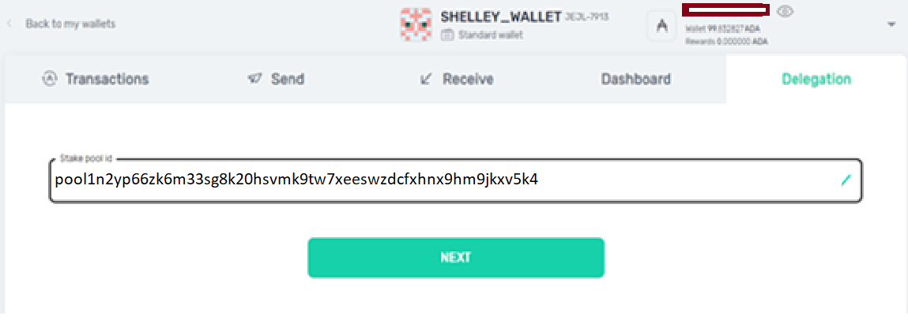

El Procedimiento Para Delegar Usando la Billetera Yoroi

Descargar Yoroi wallet
Publicación en el foro: Cardano Shelley: Como delegar desde la billetera de YOROI
Puede usar la billetera YOROI para la delegación de ADA a un Pool . Solo es posible desde la billetera Shelley. Si tienes en la vieja billetera Byron, tendrá que transferir tus ADAs de la billetera Byron a la billetera Shelley. luego puedes delegar tus ADA a un Pool. Una vez que creaste la billetera Shelley, ya puedes comenzar a delegar a nuestro pool.
Primero debe ir a Delegación e inserter nuestro pool ID
Nombre del Pool: ONE Pool [ONE1]
Pool ID:

Cuando haya insertado la ID del nuestro pool , haga clic en el botón Siguiente. Verá un cuadro de diálogo de confirmación. La billetera le mostrará los detalles del Pool . Debe proporcionar una contraseña para pagar el fee y luego haga clic en el botón Delegar.

Luego vas a ver la confirmación que has delegado exitosamente tus ADAs a ONE pool.